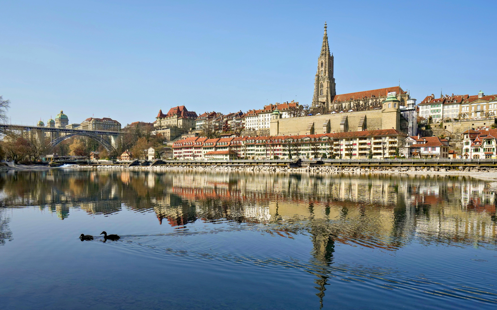
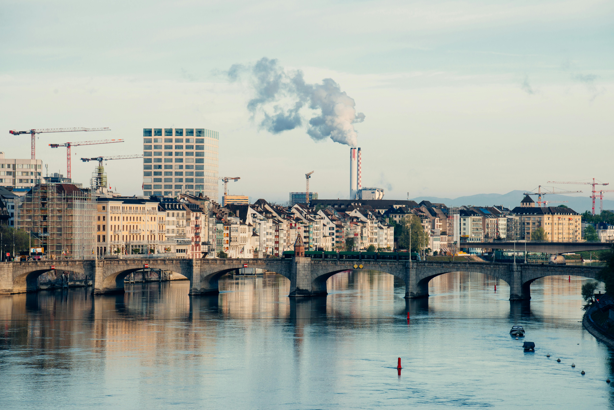
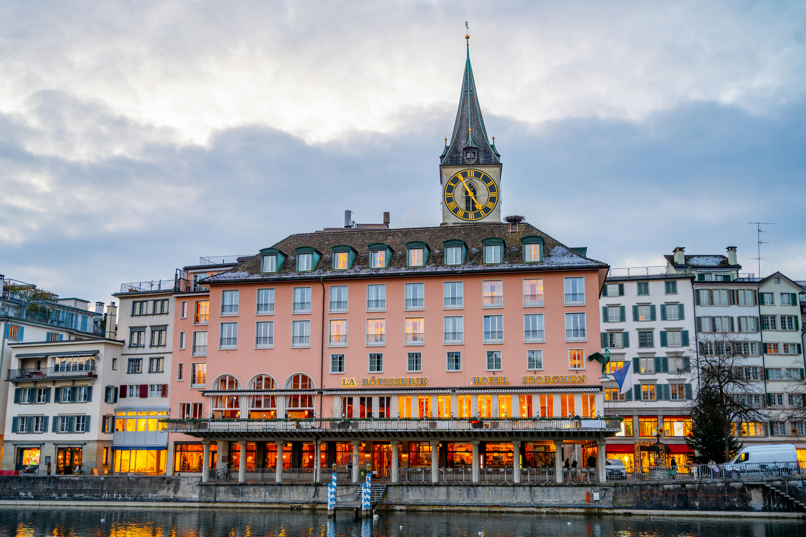
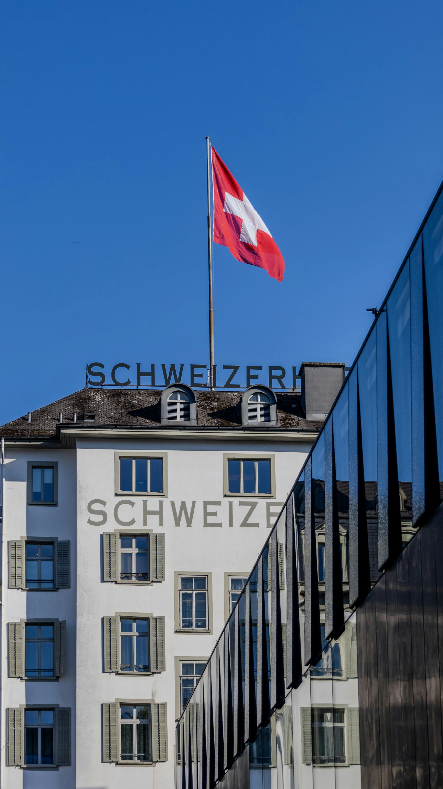

As part of our Interrailing adventure in 2005, we made our way into Switzerland and stayed overnight in both Bern and Zurich — two cities that could not have felt more different. Coming into Switzerland after travelling through other parts of Europe, the first thing that struck us was how unbelievably clean, organised and efficient everything was. The trains ran perfectly, the streets looked spotless and everywhere seemed postcard-perfect. It also felt eye-wateringly expensive compared to the rest of our Interrail trip, and we quickly learned that supermarket picnics were far kinder to the budget than Swiss restaurants.




Switzerland made a huge impression because it felt so different from many of the other places on our Interrail route. Everything seemed clean, calm and efficient. Train stations were spotless, streets looked carefully maintained, and even the rivers and lakes seemed impossibly clear.
It was beautiful, but it was also the point in the trip where we fully realised that not all European countries were equally kind to an Interrail budget. Even basic food felt expensive, so Swiss restaurant dreams were quickly replaced with supermarket picnics, bread, cheese and whatever was cheapest near the station.
We stayed overnight in Bern and Zurich, and what made the Swiss section so interesting was how different those two cities felt. Bern was calm, medieval and storybook-like. Zurich was bigger, wealthier, more polished and much more international.
Bern felt like stepping into a storybook. The old town, built on a bend in the Aare River, was full of medieval buildings, sandstone arcades, fountains and clock towers. It was calm, elegant and peaceful compared with some of the louder backpacker cities we had come from.
The Old City was the heart of our Bern wander: medieval streets, covered arcades, fountains and that quiet fairytale atmosphere that made the city feel completely different from Zurich.
The famous medieval clock tower is one of Bern's signature sights and exactly the sort of landmark you remember from an old European city.
The Swiss parliament building gave Bern a sense of quiet national importance — elegant rather than showy, which felt very Swiss.
Because Bern's symbol is the bear, tourists always went to see them. It was one of those classic city sights that felt very specific to Bern.
Zurich felt completely different from Bern: bigger, wealthier, busier and much more international. It had banks, expensive shops, suited businesspeople and a very sophisticated atmosphere — but also beautiful historic streets around the river and the incredible lakefront.
One of the world's most famous shopping streets — though on an Interrail budget, it was more of a looking street than a buying street.
Walking along the waterfront, watching boats cross the lake and trams glide through the city, was one of the prettiest memories of Zurich.
Zurich's historic churches gave the modern city a much older feel, especially around the river and old town streets.
Even with Zurich's sleek, modern energy, the streets around the river still had plenty of historic charm and beautiful city views.
One of the biggest memories from Switzerland overall was simply the scenery. Even between cities, Switzerland felt like a postcard: crystal-clear rivers, lakes shining in the sun, mountains in the distance and train journeys that felt like sightseeing without needing to pay for a tour.
The Aare River in Bern was one of those colours that did not look real — clean, turquoise and completely Swiss.
Even in the cities, the mountains never felt far away. Switzerland always had that alpine backdrop somewhere in the distance.
Swiss trains were part of the experience: clean, punctual, scenic and almost suspiciously efficient compared with everywhere else.
Lake Zurich and the rivers looked unbelievably clear and bright, especially after moving through busier European cities.
As young Interrailers in 2005, Switzerland felt almost impossibly organised and wealthy compared with many of the other countries on our route. But it also felt expensive in a way that genuinely shaped how we travelled there.
Eating out was not really a casual backpacker option. Even simple food felt pricey, so we became very fond of bakeries, supermarkets, station snacks and anything that could be eaten beside a river or on a train platform. Honestly, with Swiss views, even a budget picnic felt fancy.
Bread, cheese, snacks and anything affordable became the Switzerland backpacker meal plan.
Not exactly glamorous, but very useful when restaurants felt far too expensive.
Coming from cheaper parts of Europe, Switzerland felt like someone had doubled the price of everything overnight.
Medieval arcades, fountains, the Aare River, the Zytglogge and a calmer, almost sleepy atmosphere.
Banks, luxury shops, trams, Lake Zurich, businesspeople and a very polished international energy.
More relaxed, more charming and easier to wander without feeling like your wallet was under attack every second.
The lakefront gave Zurich its beauty — especially with boats, sunlight and the mountains not far away.
Switzerland is perfect for scenic rail journeys, lakeside cities, alpine routes and organised tours — especially if you want the beauty without having to figure out every expensive detail yourself.
Disclosure: This is an affiliate link. If you book through it we may earn a small commission at no extra cost to you.
Rail trips, city tours, lake cruises, mountain excursions and scenic experiences — Switzerland is one of those countries where the journey is part of the attraction.
Disclosure: If you book through this link we may earn a small commission at no extra cost to you.
Switzerland is beautiful but pricey, so comparing accommodation carefully is definitely worth doing before you travel.
Disclosure: This is an affiliate link. If you book through it we may earn a small commission at no extra cost to you.
Common questions
What to pack for Switzerland
For Switzerland, pack for clean city days, scenic train journeys, lake walks, changing alpine weather and the need to keep food and travel costs under control.
Perfect for train days, supermarket picnics, water, layers and wandering around Bern or Zurich without dragging your main bag.
View on Amazon →Essential for train tickets, maps, photos and not being caught with a dead phone in an expensive train station.
View on Amazon →Bern's arcades, Zurich's lakefront, train stations and old town streets all involve lots of walking.
View on Amazon →Swiss weather can shift quickly, especially near lakes and mountains. A light waterproof layer is always useful.
View on Amazon →Switzerland is ideal for refilling water bottles, and anything that saves money there is a good idea.
View on Amazon →Swiss plugs can catch people out, so a universal adaptor is the safest option for charging everything.
View on Amazon →Disclosure: These are Amazon affiliate links. If you buy through them we may earn a small commission at no extra cost to you.
Switzerland fitted beautifully into a wider Interrail route, especially with nearby Central Europe stops.
Medieval streets, bridges and old backpacker-Europe magic.
Read the Prague guide →Thermal baths, Danube views and another classic Central Europe stop.
Read the Budapest guide →A one-hour bus trip from Vienna into another capital city world.
Read the Slovakia guide →Go for the trains, the lakes, Bern's medieval charm, Zurich's polished energy and the scenery that looks edited in real life — but budget carefully, because Switzerland does not play around with prices.
Affiliate disclosure: if you book through our links we may earn a small commission at no cost to you. We only recommend places and experiences that fit our own travel style.